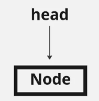
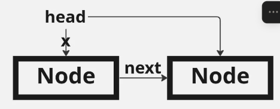
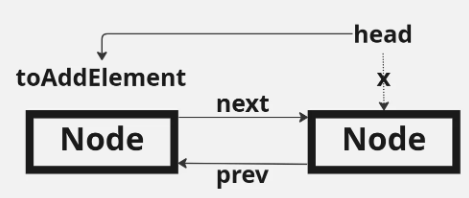
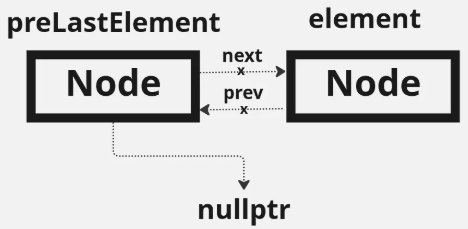
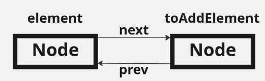
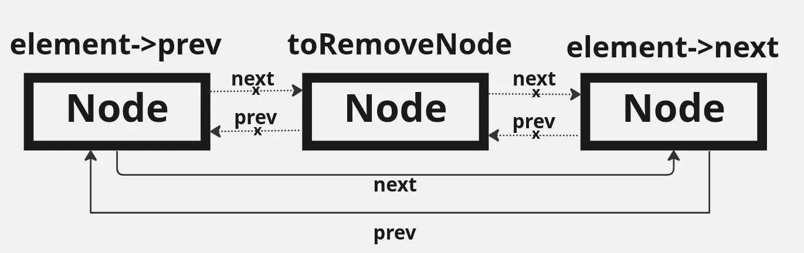
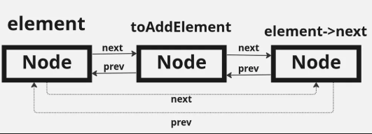
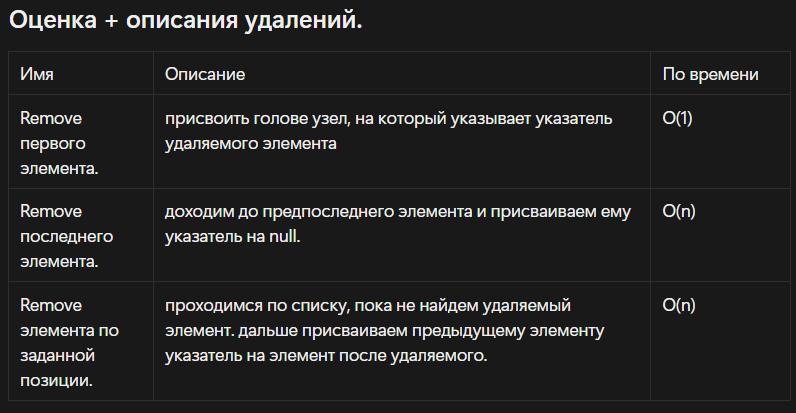
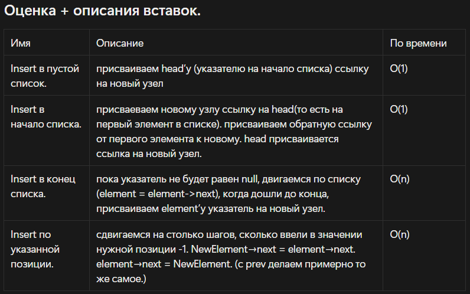
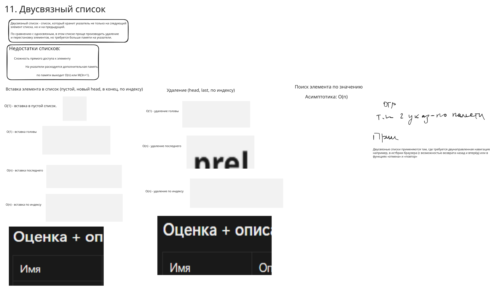

11. Двусвязный список
Теория, примеры и иллюстрации по теме.
Материалы и примеры по пунктам
Двусвязный список
Двусвязный список - список, который хранит указатель не только на следующий элемент списка, но и на предыдущий.
По сравнению с односвязным, в этом списке проще производить удаление и перестановку элементов, но требуется больше памяти на указатели.
Недостатки списков:
Сложность прямого доступа к элементу
На указатели расходуется дополнительная память
по памяти выходит О(n) или M(3n+1).
Поиск элемента по значению
Вставка элемента в список (пустой, новый head, в конец, по индексу)
Удаление (head, last, по индексу)

Асимптотика: O(n)
O(1) - вставка в пустой список.

O(1) - удаление головы

O(1) - вставка головы

O(n) - удаление последнего
Двусвязные списки применяются там, где требуется двунаправленная навигация, например, в истории браузера (с возможностью возврата назад и вперёд) или в функциях «отмена» и «повтор»

O(n) - вставка последнего

O(n) - удаление по индексу

O(n) - вставка по индексу


Схемы и рукописные примеры
